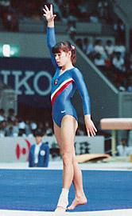

Lilia Kharisova (USSR)
1985 University Games V Bronze Medalist

Lilia was born in 1967 in Alma-Ata (Kazakhstan SSR) and trained at Dinamo with coaches Valentina Ildarova and Albina Zabolotskikh. She' a Ph.D. and is the dean of the physical education department at Kostroma State University in Russia.
Competition Results
1980 1981 This page was created on November
20, 2005 and was last updated on May 16, 2026.
Central Asian and Kazakhstan Republic Cup: 3rd AA
Jr. Kazakhstan Championships: 1st V, 1st UB, 1st B
Jr. USSR Championships: 1st AA
Schoolchildren's Spartakiade: 5th Team, 2nd V
USSR Championships: 17th AA, 6th V
1982
All-Union Youth Sports Games: 6th AA, 2nd B
SKDA Championships: 2nd Team, 6th AA, 1st V
USSR Cup: 3rd B
1983
USSR Cup: 13th AA
USSR Spartakiade: 6th Team, 10th AA
1984
USSR Championships: 10th AA
USSR Cup: 9th AA, 3rd V
1985
Riga International: 8th AA (exhibition)
University Games: 1st Team, 6th AA, 3rd V, 8th FX
USSR Championships: 6th Team, 8th AA
USSR Cup: 19th AA
© Gymn Forum